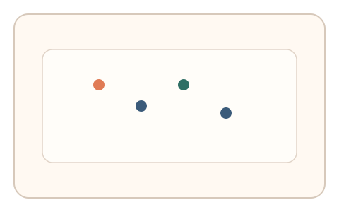
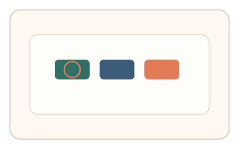
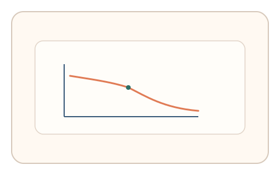

#58
视觉思考范式：扫描/错觉/全局-局部
已扩展
亚视觉计数阈值
短时闪现 1-6 个点并即时报数，利用 subitizing 的反应时拐点验证真实性。
概念原文
50–150ms 闪现 1–6 个点，用户即时报数；记录从“直觉数”到“需要数”的反应时拐点。
利用人类 subitizing 的速度拐点而非正确率。
研究背景
人类对少量目标具有快速的直觉数能力（subitizing），超过阈值后反应时显著增加。通过测量反应时拐点与错误分布，可形成稳定的行为特征。
核心机制
- 50-150ms 闪现 1-6 个点。
- 用户立即报数或选择数量。
- 记录反应时与错误分布。
- 拟合直觉数到计数的拐点。
用户流程
- 步骤 1：用户看到短时闪现的点数。
- 步骤 2：用户立即报数或选择数量。
- 步骤 3：系统拟合拐点并判定。
判定信号
反应时拐点位置
subitizing 与计数的过渡具有稳定阈值。
错误分布与波动
阈值附近错误率上升具有规律性。
判定逻辑
拟合反应时曲线与错误分布，要求拐点落在人类范围；反应时线性或拐点异常判异常。
对抗面
- 脚本直接统计点数并固定响应
- 重放真实用户的作答序列
防御与缓解
- 随机化点位与呈现时长
- 加入轻微噪声与掩蔽干扰
- 叠加微时序与鼠标轨迹信号进行多信号验证
可达性与风险
提供更长呈现时间或替代任务模式，避免对视觉敏感用户造成负担。
- 短时闪现导致误差增大
- 显示器刷新率限制呈现精度
可视化状态

状态 1：点数闪现
短时闪现少量点。

状态 2：即时报数
用户快速选择数量。

状态 3：拐点判定
拟合反应时拐点曲线。
参考资料
Subitizing
说明直觉数与反应时拐点。
Reaction time
说明反应时作为行为特征。